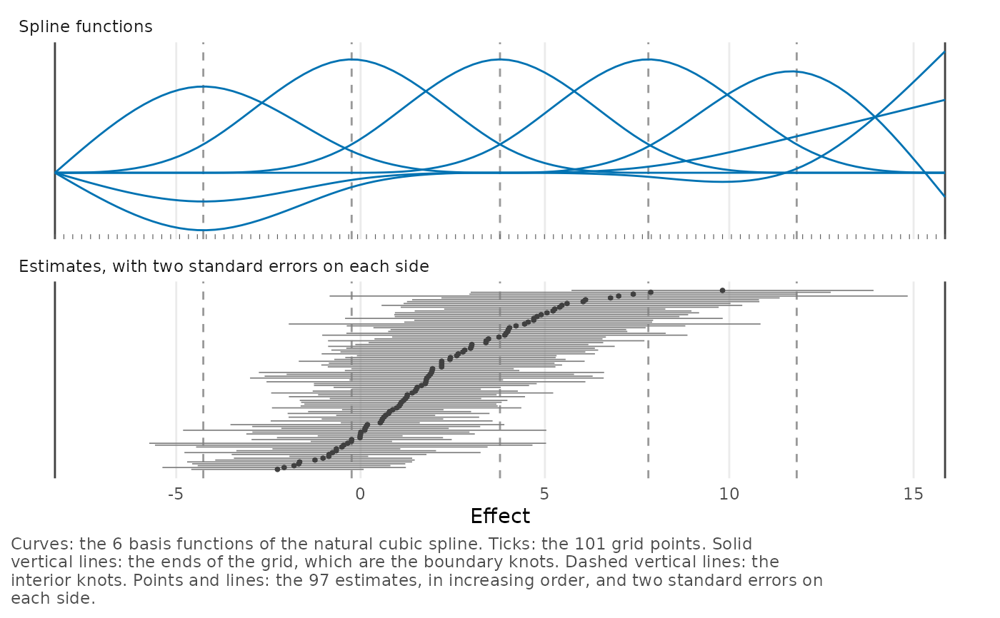
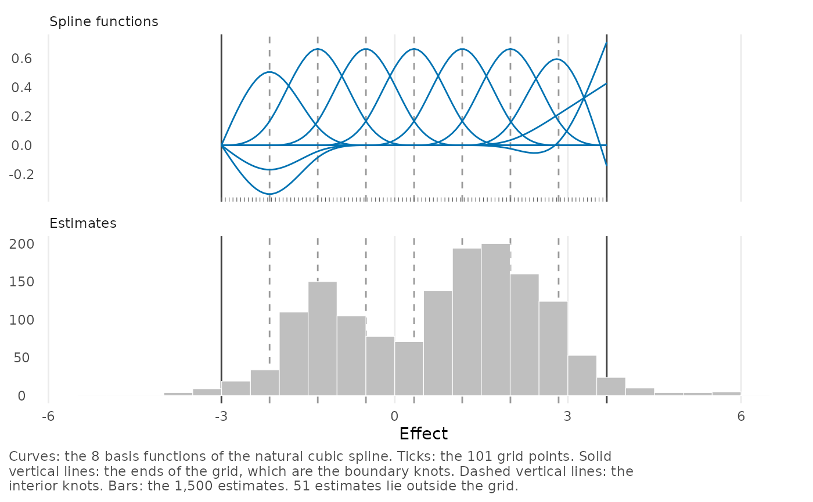

The plot() method for a grid created by make_efron_grid() shows
where the grid lies in relation to the data. The spline functions are
plotted over the range of the grid, with the knots and the grid points,
and the estimates are shown below them on the same axis, with 2
standard errors on each side. The plot shows whether estimates lie
outside the range of the grid, whether the range is much wider than the
estimates, and whether there are knots in regions without estimates.
Usage
# S3 method for class 'bef_grid'
plot(x, theta_hat = NULL, sigma = NULL, scale = 1, ...)Arguments
- x
A
bef_gridobject created bymake_efron_grid().- theta_hat, sigma
Estimates and their standard errors, as numeric vectors. As in
make_efron_grid(),theta_hatcan also be a data frame or abef_dataobject. IfNULL(the default), the estimates stored in the grid are used.- scale
Multiplier for the values on the effect axis, a positive number. For example,
scale = 100shows differences in proportions as percentage points.- ...
These dots are for future extensions and must be empty.
Details
Up to 100 estimates are shown one by one, in increasing order, each as a point with a line from 2 standard errors below it to 2 standard errors above it. More than 100 estimates are shown as a histogram.
A grid created by make_efron_grid() contains the estimates from which
it was built, but the grid stored in a fit does not. To plot the grid
of a fit, use plot(fit, type = "grid"), which adds the data of the
fit, or supply the data as theta_hat and sigma. If there are no
estimates, only the spline functions are shown.
The spline functions are the natural cubic spline basis computed by
splines::ns(). The boundary knots are at the limits of the grid,
which the caption of the plot calls the ends of the grid. The interior
knots are at quantiles of the grid points, so they are equally spaced.
Examples
grid <- make_efron_grid(krw_discrimination, grid_method = "paper_realdata")
plot(grid, scale = 100)

# The grid of a fit, with the data of the fit.
plot(twin_towers_fit, type = "grid")
